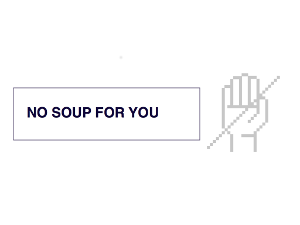

Hur ansöker jag?
Att ansöka till en tradenom utbildning och därmed en trevlig studieplats går med en enda ansökan. Utbildning på ett främmande språk och vuxenutbildning har båda sina egna gemensamma ansökningar. Ansökan måste vara sparad den sista ansökningsdagen före givet klockslag. När din ansökan kommit fram, så får du en bekräftelse via epost.
Antagningen av studerande
Det slutliga valet baserar sig på skolprestationer, första ansökningsönskemålet och inträdesprovet. Alla behöriga sökande kallas till det nationella urvalsprovet. I urvalsprovet bedöms lämplighet, motivation och inriktning till branschen, logiskt tänkande samt förmåga att lösa problem, och tillägnande av ny kunskap. Allt material delas ut vid urvalsprovet. Urvalsprovet äger rum i den yrkeshögskolan, som har kallat den sökande till provet.
Acceptans
Du tar emot studieplatsen genom att skicka in blanketten ”Meddelande om mottagande av studieplats” som du får med antagningsbrevet. Ditt meddelande om mottagande av studieplats är bindande. Försäkra dig om att din blankett inom utsatt tid når fram till den yrkeshögskola du sökt till. Du kan ta emot endast en studieplats till någon av de utbildningar som inleds under samma termin (1.8 - 31.12).
Utbildningskrav
Som grundutbildning lämpar sig både gymnasiet och yrkesskolutbildning.
Senast uppdaterad 24.4.2016 klo 20.20
IT-tradenomernas inlärningsmål har definierats riksomfattande. I målen beskrivs den kunskap som kännetecknar branschen. Varje utbildningsprogram i Finland betonar dessa mål, även kallade kompetenser, men på sina egna sätt. Förkortning av IKT står för informations-och kommunikationsteknik.
Informationssystem
Som IT-tradenom styr du utvecklingen av informationssystem för hanteringen av företagets verksamhet. Du känner till programvaran och databaser, med hänsyn till informationssäkerhet. Du kan vid behov utforma din egen studieplan och förverkliga den.
IKT-Infrastruktur
Du utnyttjar effektivt datanät och dess komponenter när du gör lösningar. Du kommer att kunna genomföra och upprätthålla datasäkerhetsnätverk med hjälp av IKT-infrastrukturlösningar.
IKT-projekt
Du behärskar helhetsmässig projektverksamhet inom en organisation, samt systematisk verksamhet inom ett projektarbete. Du utnyttjar och tillämpar olika metoder för planering och kontroll av projekt. Du kan identifiera de risker som är förknippade med projektet, och du är förberedd på dem.
Affärsverksamhet
Du förstår de centrala affärsprocesserna och funktionerna. Du kommer också att förstå vikten av IT-verksamheten för en organisation och kan med hjälp av IT komma fram till problemlösningar. Du behärskar delområden inom kundtjänst i en affärsverksamhet. Du förstår betydelsen av olika typer av kontrakt, erbjudanden, licenser och upphovsrättigheter i ditt eget arbete.
Senast uppdaterad 24.4.2016 klo 20.20
Allmän information
Inom branschen för Informationsbehandling arbetar man med att bygga och underhålla datorsystem, nätverkslösningar och tjänster som erbjuds på Internet. Mobila tjänster och spel har också gett nya möjligheter för branschen. Efter examen kommer du att delta i utformning och genomförande av IT-lösningar. Din arbetsplats kan vara inom nästan alla sektorer, såsom IKT-tjänster, handeln, industrin eller den offentliga förvaltningen. Du kan även starta ditt eget företag.
Certifierad
En tradenom som har utexaminerats från en yrkeshögskola och har studerat ämnet Informationsbehandling, även kallade IT-tradenomer, kan i samarbete med andra människor utveckla datasystem för att förbättra kundföretagens verksamhetsförutsättningar och möjligheter till affärsverksamhet. IT- tradenomen är vardagssmart, en problemlösare, ivrig att lära sig nya saker och tycker om att arbeta med nya människor.
Mänsklig närhet och professionell expertis
På en IT-tradenoms arbetsfält betonas två saker: människonärhet och professionell yrkeskunskap,
Genom att studieuppgifter görs I grupp och I projekt med kunder utvecklas IT-tradenomen till en samarbetsvillig och interaktiv person. Du behöver
professionell kunskap för att förbereda dig för kundernas utmaningar.
Studierna är väldigt praktiska, i dem ingår inte alls fysik eller kemi och matematiken handlar för det mesta om tabellräkningar. Studierna kan omfatta
en mängd olika informationssystem, e-lärande miljöer, e-handel, kundrelationer, datakommunikation, affärssystem, marknadsföring på webben, eller allmän
affärsutveckling.Studierna kan vanligtvis förknippas med grundläggande kunskaper i programmering, som inkluderar till exempel programmeringsspråken PHP
och Java, medan i databasutveckling inkluderas t.ex. Access och MySql.
Internationellt utvecklande område
På sidan om dina IT-studier kan du utöka din kunskap om affärsverksamhet, till exempel som utbytesstudent utomlands. Internationalism är en stigande trend inom området, inom databehandling förväntas du ha goda kunskaper inom språk. Utlandsstudierna förlänger inte studietiden, eftersom de räknas med in i utbildningsprogrammet. Inom branschen för Informationsbehandling arbetar man med att bygga och underhålla datorsystem, nätverkslösningar och tjänster som erbjuds på Internet. Mobila tjänster och spel har också gett nya möjligheter för branschen. Efter examen kommer du att delta i utformning och genomförande av IT-lösningar. Din arbetsplats kan vara inom nästan alla sektorer, såsom IKT-tjänster, handeln, industrin eller den offentliga förvaltningen. Du kan även starta ditt eget företag.
Senast uppdaterad 24.4.2016 klo 20.20
kartapplikation kräver mer än 550-pixel skärmstorlek!
Om utbildning organiseras? Du kan se svar genom att trycka på skolans namn.
Senast uppdaterad 24.4.2016 klo 20.20
Intressanta och utmanande uppgifter du tränar